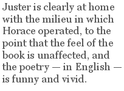

The inherent problem with reviewing A. M. Juster’s translation of The Satires of Horace (University of Pennsylvania Press, 2008) is the Horace bit. Poor Quintus Horatius Flaccus is quite unable to take a positive review to heart, given that he is 2,017 years dead. Nor will he respond to constructive criticism. He cannot move with the times and slash his long poems to the length preferred by The New Yorker, nor clarify that joke that everybody got back then and nobody gets now. Nor will he rewrite the Satires in a language that somebody still speaks, for Christ’s sake. The text is what it is, but for the dead language bit, we have translators like Juster.
For the non-Classicist, the first question probably runs something like this: “Yes, the Satires are ‘important’ and all the rest, but are they worth reading? Are they actually funny and insightful from our perspective? And if so, does that come through in the English version?” As for the first part, yes. A basic knowledge of Julio-Claudian Rome helps a great deal, but with allowances for time and place, this description of a holiday gone horribly wrong rings true:
Mean-spirited mosquitoes and the frogs
who kept on croaking loudly from their bogs
disrupted sleep. A sailor marinating
in wine far past its prime was serenading
a long-lost girl, and someone passing through
supplied some louder harmonizing too.
And throughout, the characters are not quite like us — but when you make allowances for the differing institutions and mores and what have you, they are enough like us to hold our attention. The edition helpfully supplies copious notes pinpointing places and sketching characters for an audience unfamiliar with them, but the reader can enjoy the text with only minimal reference to them.
The translation itself, in iambic pentameter couplets, is a distinct cut above other recent attempts at bringing the Satires into English. Juster is clearly at home with the milieu in which Horace operated, to the point that the feel of the book is unaffected, and the poetry — in English — is funny and vivid. This has not generally been the fate of the Satires in English, and if nothing else, Juster’s translation makes the case for their poetic value.
Indeed, modern-day satirists could learn a lot from Horace via Juster. There is an elegance to Horace, a nuance, that much recent “satirical” poetry simply lacks. Even as he shakes his head at the foibles of others, he never reduces his targets to stereotype. The result is a sense of time and of place in which a reader can both immerse him- or herself, and perhaps, recognise not only the personal foibles of others both remote and proximate, but also human beings who muddled — and still muddle — through it all despite their shortcomings.